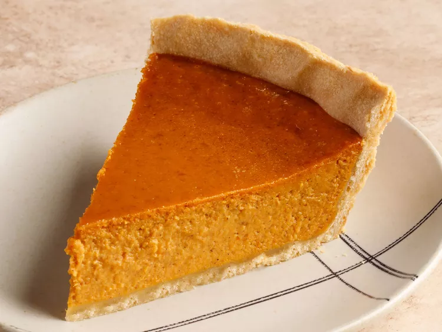

Pumpkin Pie

Learn how to make pumpkin pie with just four ingredients!
Thanksgiving wouldn't be complete without a homemade pumpkin pie. But we're going to let you in on a little secret:
Making the seasonal dessert is actually quite simple. Don't let the season pass you by without trying this easy
pumpkin pie recipe.
Believe it or not, you can make this bakery-worthy pumpkin pie with just five easy-to-find ingredients. Continue
reading!
Ingredients:
- Pie Crust
- Pumpkin Puree
- Sweetened Condensed Milk
- Eggs
- Pumpkin Pie Spice
- Roll out the chilled pie crust.
- Line the pie crust with parchment paper.
- Make the pumpkin pie filling.
- our pumpkin pie filling into the warm crust.
- Once done, transfer the pie to a wire rack and allow to cool completely for at least 3 hours before garnishing
and serving.
Back to the Top
Return to Main Page